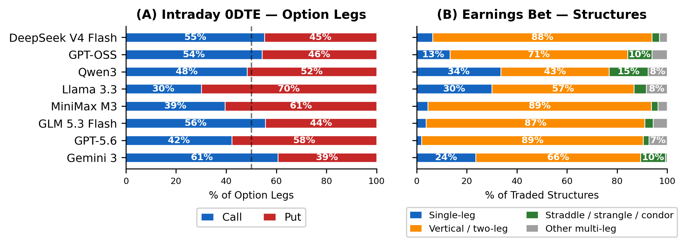

Evaluating LLM Agents in Structured Option Trading with Nonlinear Payoffs
Equity benchmarks ask whether a model can call direction. Options ask something harder: construct a position whose payoff is nonlinear, under margin and liquidity constraints, and carry it through an event. LiveOption is a replay benchmark that puts eight LLM agents through three such tasks and reports what they actually did, not only what they earned.
An option position is a bet on more than direction. Its value moves with the underlying, with implied volatility, and with the passage of time, and the three pull against each other. An agent that is right about where a stock is going can still lose, because it paid too much for the volatility it bought or carried the position one day too long.
LiveOption replays 2025 market data through a brokerage-style engine that enforces margin, multi-leg position management and contract consistency. At every decision step the agent is shown only information timestamped before that step. We record the full trace — the thesis text, the intent stream, the fill log and the Greek snapshots — and evaluate on three axes: what the agent earned, how it behaved, and what it stopped doing when we removed part of its context.
Each suite isolates a different failure mode, and each one is in the demos.
A year-long option overlay on an existing equity position, five assets per mandate. The question is not whether the stock went up — it is whether the overlay beat simply holding the stock. Active return is negative for all eight models under hedging and seven of eight under covered calls, while drawdown falls for seven of eight. The overlay changes the risk profile; it does not add alpha.
Enter two sessions before a scheduled announcement and carry the position through it. Implied volatility is at its highest exactly when the agent is deciding what to pay. Eighty-three percent of opened structures are net debit: the panel buys premium into a scheduled volatility contraction, and theta is large and negative for every model.
102 sessions of options that expire at the close, where gamma and theta are both extreme and a position left open is a position decaying. Every model loses on the majority of sessions. The three positive means in the panel rest on a handful of right-tail sessions and do not survive a realistic half-spread charge.
Raw option chains are too large and too redundant to hand a model directly. The engine summarises the volatility surface at a small set of anchor points over moneyness and tenor, and quantises the chain into expiry buckets and moneyness levels, so an agent specifies a trade at the level of financial intent rather than picking among hundreds of contracts. Every order then passes a risk layer that enforces margin feasibility, per-trade loss caps and exposure limits before it reaches the matcher.

Sort any column. Means carry a 95% percentile bootstrap interval from 10,000 episode resamples; every figure here is the one printed in the paper.
Each dot is one episode. The box spans the interquartile range and the line is the median. The means sit to the right of the medians because a few right-tail episodes carry them.
Pick a scenario. You get the exact prompt the engine handed the agents at the opening decision, byte for byte. Compare the models’ recorded answers, proposed option legs and orders resolved by the engine.
Browse saved decisions from the benchmark. Select a scenario and build to view the observation and recorded answers.
What each agent chose to do, from its recorded trace.